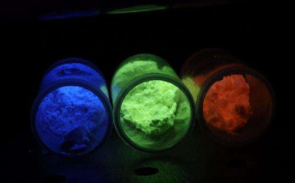
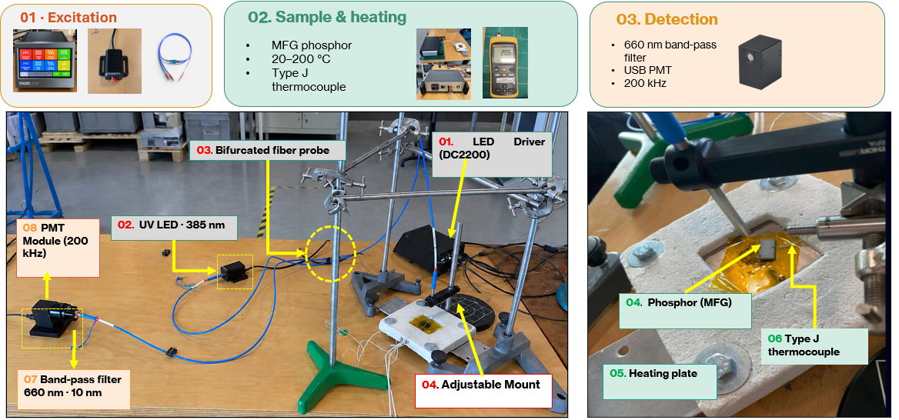
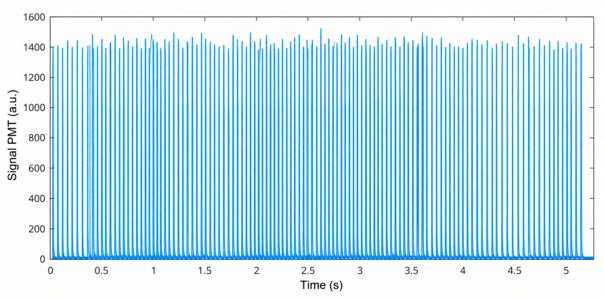
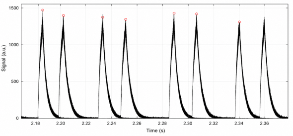
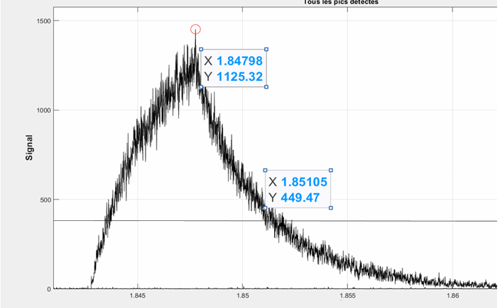
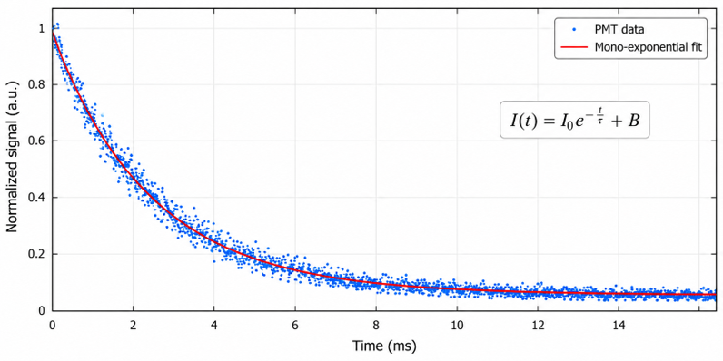
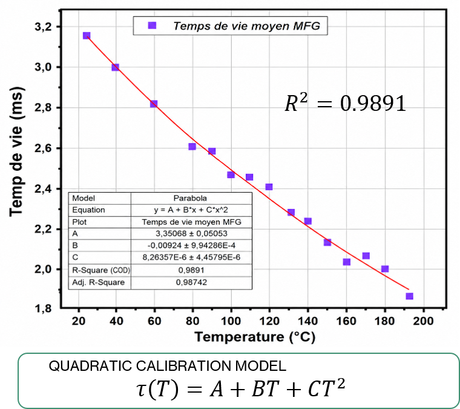
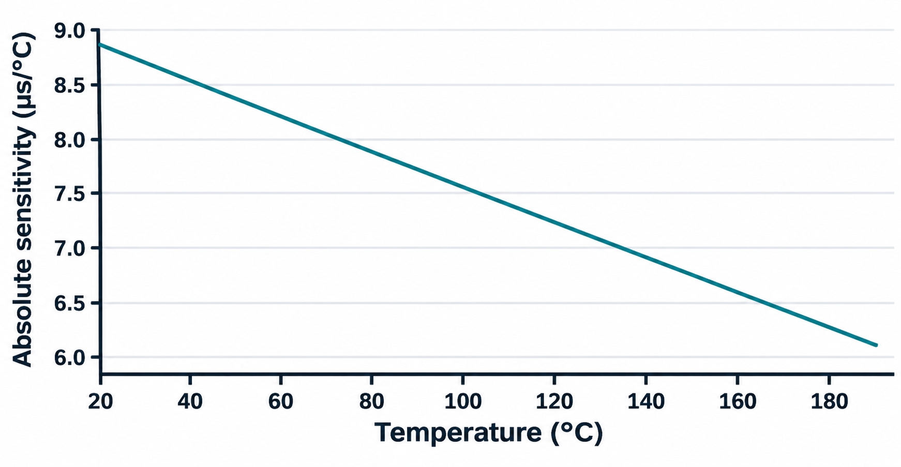

ACADEMIC PROJECT · OPTICAL INSTRUMENTATION
Photoluminescence Thermometry
Development and calibration of an optical test bench for temperature measurement using photoluminescence lifetime.
IMT Mines Albi · Institut Clément Ader · 2025
Three-month academic project carried out with a fellow
student under faculty supervision.

Measuring Temperature Through Light
Why Photoluminescence Thermometry?
Temperature is commonly measured using contact sensors, such as thermocouples, or non-contact techniques, such as infrared thermography. However, contact sensors may be difficult to integrate into certain experimental setups, while infrared measurements depend on knowledge of surface emissivity.
Photoluminescence thermometry offers an alternative. When a phosphor is excited by light, it emits luminescence that gradually decays after excitation stops. The characteristic decay time, known as the luminescence lifetime, can depend on temperature.
By measuring this lifetime rather than absolute emission intensity, temperature can be estimated using an experimentally established calibration curve.
This project was carried out at the Institut Clément Ader (ICA), a joint research laboratory (UMR CNRS 5312) involving the CNRS and IMT Mines Albi, among other institutions. Its research includes materials, mechanical systems, instrumentation and measurement.
Academic supervision: Étienne Copin · IMT Mines Albi
Explore the research environmentFrom Optical Excitation to Temperature Measurement
The experimental bench combined three elements: pulsed UV excitation, controlled sample heating, and time-resolved optical detection. The annotated photograph below shows the components and their arrangement.

01 / Optical Excitation
A Thorlabs M385FP1 UV LED (385 nm), controlled by a DC2200 pulse driver, provided the optical excitation. One branch of a bifurcated fiber probe guided the light toward the MFG phosphor.
02 / Sample & Thermal Control
The MFG phosphor was placed on a regulated heating plate. A Type J thermocouple provided the reference temperature for the calibration measurements.
03 / Detection & Acquisition
The second fiber branch collected the emitted luminescence, which passed through a 660 nm band-pass filter (10 nm bandwidth) before reaching the PMT. Signals were acquired at 200 kHz for lifetime analysis in MATLAB.
From PMT Signals to Luminescence Lifetime
The photomultiplier recorded the luminescence response at 200 kHz. MATLAB was used to identify excitation cycles, extract the decay signals, and estimate the characteristic lifetime through mono-exponential fitting.
01 / Signal Acquisition
The PMT signal was recorded at 200 kHz, corresponding to a sampling interval of 5 microseconds. Each acquisition contained repeated excitation and luminescence decay cycles.

02 / Peak Detection
MATLAB's findpeaks function was used to identify successive signal peaks. A threshold based on the estimated baseline and noise level helped distinguish the peaks from background fluctuations.
A minimum peak separation of 40 ms was applied to avoid detecting multiple peaks within the same excitation cycle.

03 / Decay Extraction
After detecting the signal peaks, individual luminescence decays were isolated for analysis.
The first 200 microseconds were excluded to reduce switching transients. A 15 ms fitting window was then selected to estimate the luminescence lifetime.

04 / Lifetime Estimation
Individual luminescence decays were fitted in MATLAB using a mono-exponential model:
I(t) = I₀ exp(−t/τ) + B
The fitted parameter τ represents the characteristic luminescence lifetime. Lifetimes from repeated decay cycles were used to obtain a representative value at each reference temperature.

Relating Luminescence Lifetime to Temperature
We compared the measured luminescence lifetimes with the temperatures recorded by the thermocouple. This allowed us to build a calibration curve linking lifetime to temperature.

How Lifetime Changes with Temperature
The measured lifetime decreased from about 3.15 ms near 25 °C to 1.84 ms at 190 °C.
We compared linear, quadratic and cubic models to describe this relationship. We chose the quadratic model because it provided a good fit (R² = 0.9891) while keeping the calibration relatively simple.

What Does Sensitivity Tell Us?
We calculated the absolute sensitivity from the quadratic calibration model.
It decreases from approximately 8.9 to 6.1 µs/°C between 20 °C and 190 °C. This means that, at higher temperatures, the lifetime changes less for each additional degree.
For the same uncertainty in lifetime measurement, this can lead to greater uncertainty in the estimated temperature.
What We Could Not Yet Establish
The calibration shows a clear relationship between lifetime and temperature. However, we did not independently validate the temperature estimates or complete a full uncertainty analysis. We therefore cannot claim a specific measurement accuracy.
What I Learned from This Project
Choosing the Right Components
I learned why the choice of detector and optical filter matters. We needed a fast detector to measure the luminescence decay and a filter to separate the emitted light from unwanted signals.
Working with Real Signals
I learned that the signal recorded by the PMT cannot simply be fitted as it is. We had to detect the pulses, exclude the initial transient and fit individual decays before calculating the mean lifetime.
Understanding What a Good Fit Means
I learned that the model with the highest R² is not always the best choice. We also had to consider how the model behaved when calculating sensitivity, and what the calibration could actually tell us about temperature measurement.